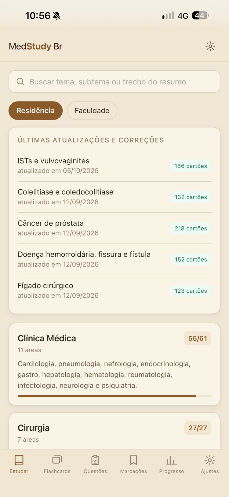
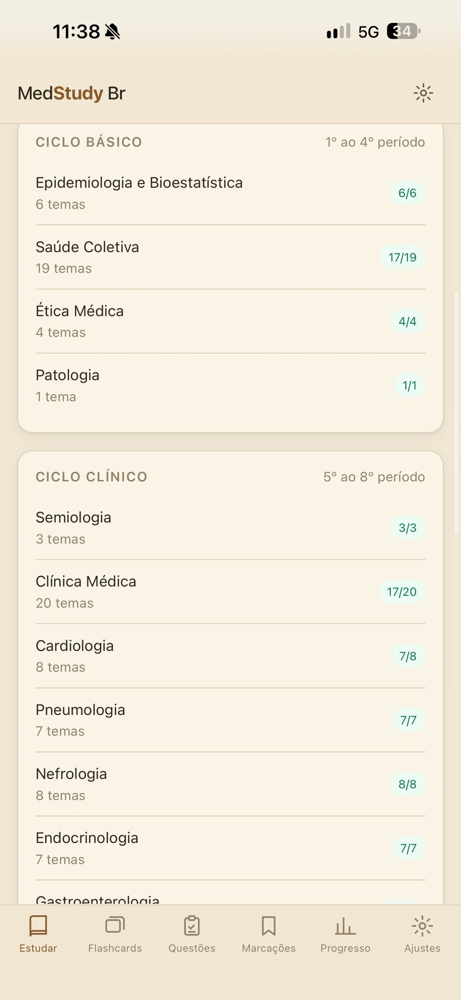
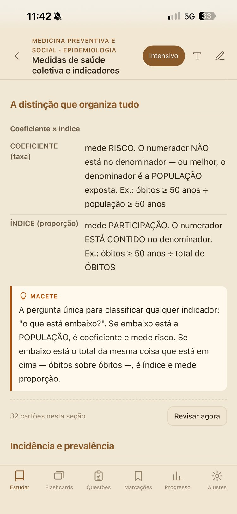
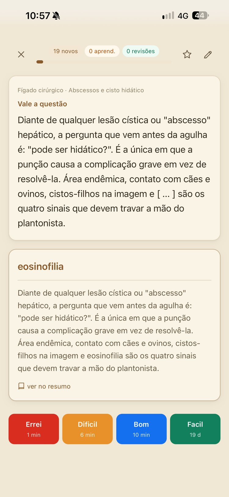
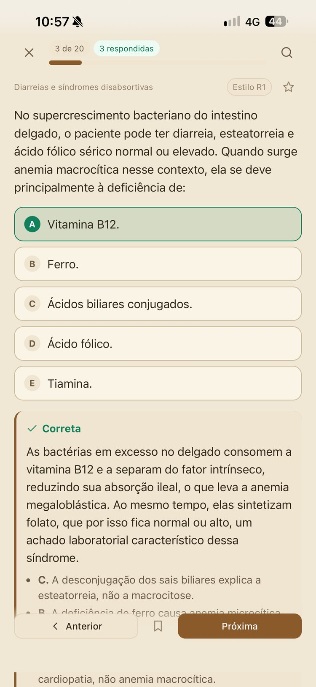
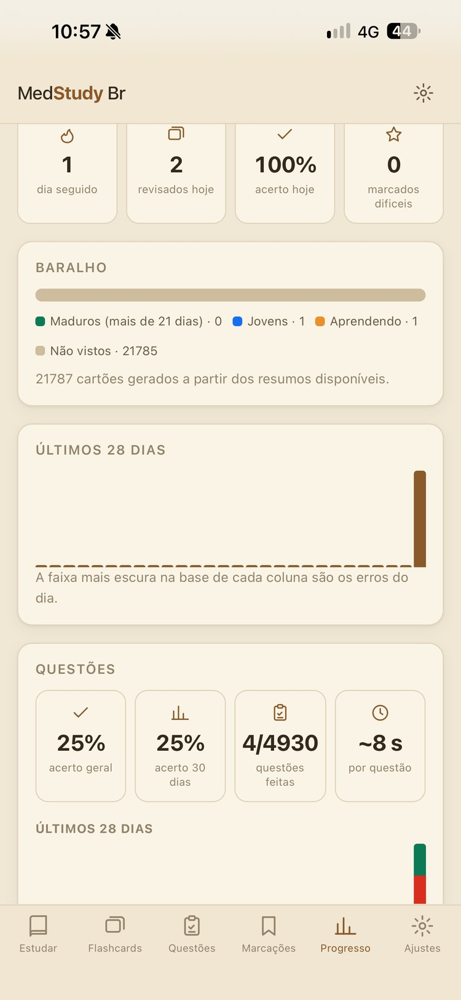
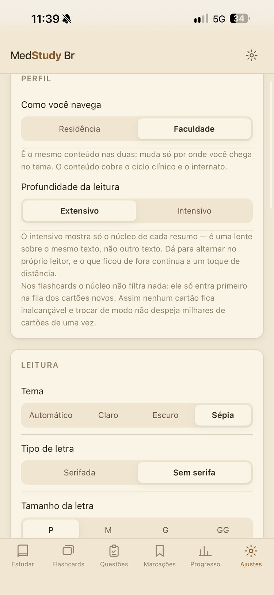

MedStudy Br
Resumos, flashcards e questões de medicina, da faculdade à residência.
Resumos de autoria própria, revisados com apoio de inteligência artificial e organizados por grande área, disciplina e tema — com cartões de repetição espaçada e um banco de questões no estilo das principais bancas para você saber exatamente onde está e o que estudar agora.

Estudar, compreender, revisar, testar — e repetir
Do resumo ao cartão de revisão, e do cartão à questão de prova. Muito conteúdo, mas sempre sabendo onde você está e o que fazer agora.
Resumos por tema
134 temas das cinco grandes áreas — Clínica Médica, Cirurgia, Pediatria, Ginecologia e Obstetrícia e Medicina Preventiva — escritos para estudar de verdade, com tabelas, macetes e pontos de prova.
Flashcards automáticos
Mais de 21.700 cartões gerados a partir de cada resumo, com fila de novos, aprendendo e revisões — repetição espaçada que insiste no que você errou.
Banco de questões
Mais de 15.000 questões autorais no formato de cada banca (ENARE, REVALIDA, ENAMED, SUS, USP, UNIFESP, UNICAMP e outras), com explicação de cada alternativa e link direto para o resumo.
Extensivo e intensivo
O mesmo texto em duas lentes: leitura completa para aprender ou só o núcleo de cada resumo para a reta final — sem duplicar conteúdo.
Faculdade e residência
Navegue por grande área (residência) ou por ciclo e disciplina (faculdade): Básico, Clínico e Internato, sobre o mesmo conteúdo.
Simulados e sessões dirigidas
Monte simulados por grande área, banca, nível e tempo, ou refaça só as questões erradas, nunca vistas ou favoritas.
Grifos, notas e desenho
Marque trechos, escreva notas e desenhe à mão (Apple Pencil no iPad), tudo preso ao resumo e salvo no aparelho.
Progresso detalhado
Sequência de dias, maturidade do baralho e desempenho nas questões por grande área — geral e nos últimos 30 dias.
Leitura sob medida
Tema claro, escuro ou sépia, letra serifada ou não, quatro tamanhos e largura confortável no iPad.
Lembretes de estudo
Lembretes locais no horário que você escolher, para manter a constância sem depender de internet.
100% offline
Resumos, flashcards e questões funcionam sem internet. Seu progresso fica no seu aparelho, com backup manual quando quiser.
O aplicativo em ação
Resumos, flashcards, questões e progresso — no iPhone e no iPad.






Escrito por quem ensina e por quem também já estudou para a prova.
O MedStudy Br nasceu da mesma ideia do AneStudy: transformar conteúdo médico complexo em conhecimento organizado, revisável e consolidado aos poucos — agora para toda a medicina.
Os resumos são de autoria própria e passam por revisão contínua, com apoio de inteligência artificial para organizar e atualizar o conteúdo — mas a fonte primária continua sendo a literatura e as diretrizes oficiais, com prioridade para as brasileiras.
Serve ao estudante, que acompanha a faculdade ciclo a ciclo, e ao médico formado, que se prepara para a residência: leia o resumo, deixe o app gerar os cartões, revise um pouco todo dia e treine com questões.
Aviso importante
O conteúdo do MedStudy Br passa por revisão contínua — temas, cartões e questões são atualizados com frequência.
As questões são de autoria própria, escritas no formato de cada banca, e não reproduzem provas oficiais. Os resumos são material de estudo — confira sempre a fonte primária antes de aplicar qualquer conduta a um paciente.
Leve o MedStudy Br para a sua rotina de estudo
Baixe agora na App Store, com 14 dias grátis e preço promocional de lançamento. A versão para Android chega em breve à Google Play.